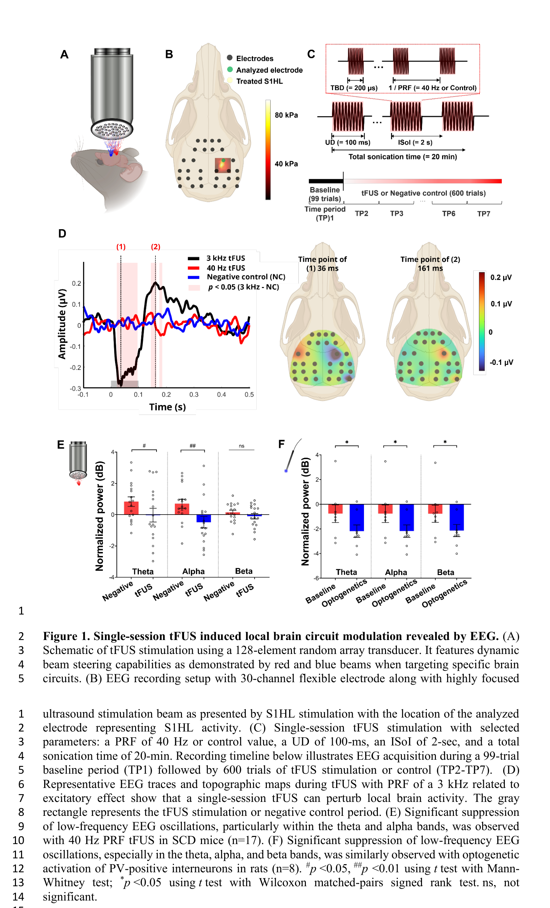
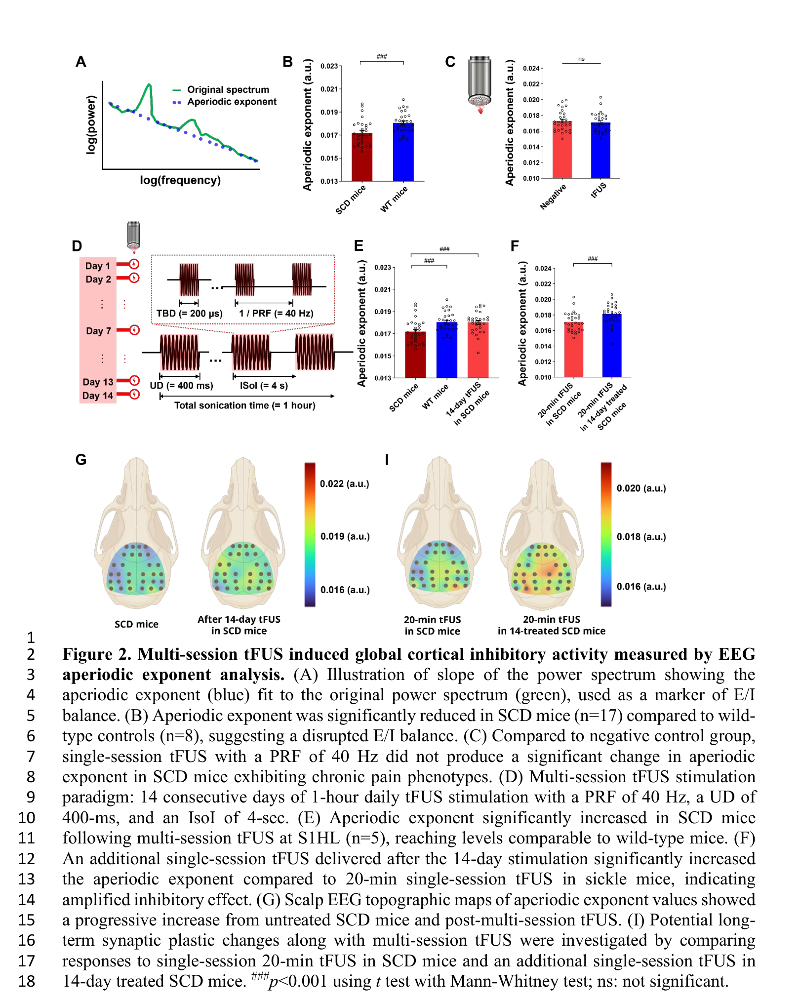
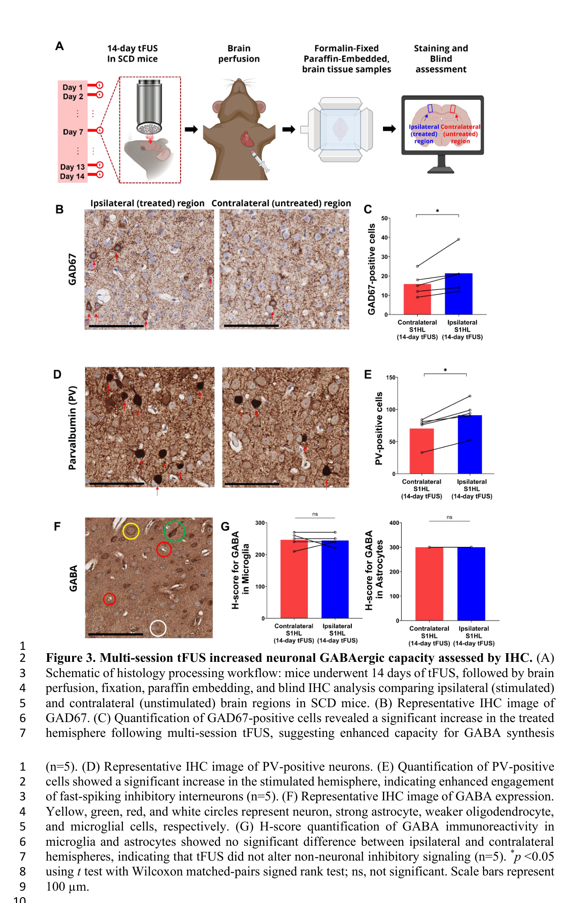
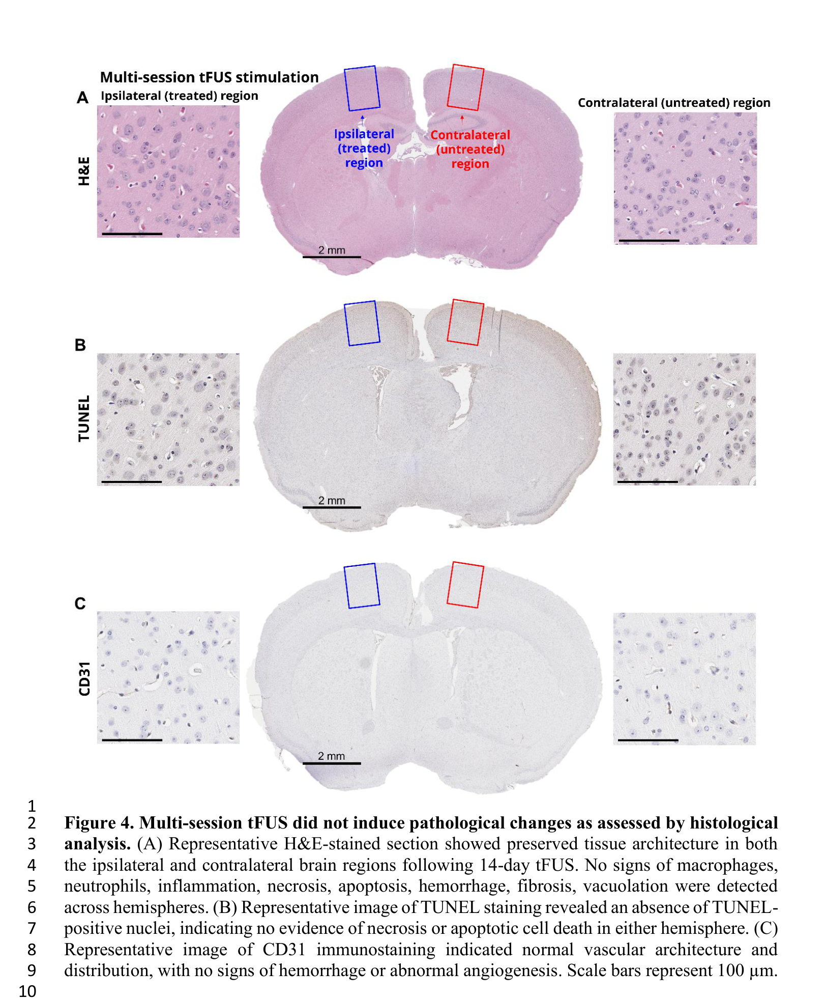

论文精读说明文档
低强度经颅聚焦超声通过 PV 阳性 GABA 能中间神经元调控慢性痛
从头皮 EEG 到免疫组化的多层级机制验证：40 Hz PRF 的 tFUS 可以在慢性痛小鼠模型中优先招募 PV 快放电抑制性中间神经元，恢复皮层兴奋/抑制平衡。
论文信息
Journal of Neural Engineering - 2026 - Kim - Low-intensity tFUS engages PV GABAergic interneurons in chronic pain.pdf
一句话定位
这篇文章是目前少数将 tFUS（经颅聚焦超声）的神经调控机制从系统层（头皮 EEG）一路追溯到细胞分子层（免疫组化）并与光遗传学对照交叉验证的工作：它用多层证据支持"40 Hz 脉冲重复频率的低强度超声在慢性痛模型中优先激活 PV 阳性快放电抑制性中间神经元，从而恢复兴奋/抑制失衡"这一机制假说。
为什么值得读
慢性痛的药物治疗（阿片类药物等）有成瘾和副作用问题，非药物、非侵入式的调控手段是刚需。tFUS 相比经颅磁刺激（TMS）或经颅直流电刺激（tDCS）具有更好的空间分辨率（可聚焦到毫米级深部脑区）和更强的颅骨穿透能力，但其作用机制在这篇文章发表前主要停留在"行为改善了"，没有从电生理到细胞层面系统串联起来。
这篇文章的两个核心贡献值得关注：
- 非侵入式神经调控的参数-效应映射：明确了 PRF（脉冲重复频率）40 Hz 偏向抑制（vs 3 kHz 偏向兴奋），这对临床参数优化有直接意义——如果你不知道参数选择的效应方向，"调控"可能适得其反。
- 细胞类型特异性干预的验证路径：光遗传学和免疫组化如何配合使用，间接推断特定细胞类型（PV 中间神经元）的参与——这套方法论本身就是一个值得借鉴的设计框架。
对你而言，这篇文章与你的电刺激研究形成有趣的对称：你在精确测量细胞层面的膜电位响应，这篇文章恰好在系统层做出了观察但在细胞层留下了缺口。从原理上理解一种全新的物理刺激模态（声波 vs 电流），也有助于拓宽你对"神经调控机制研究"的整体认知框架。
术语先说明
图文导读




机制横向对照
本文构建的因果链条如下：
| 层级 | 观测指标 | 单次 tFUS 结果 | 多次 tFUS 结果 | 机制解读 |
|---|---|---|---|---|
| 系统层（EEG 频谱） | theta / alpha 频段功率 | 40 Hz PRF 显著降低；3 kHz PRF 兴奋性增大 | — | PRF 决定调制方向；40 Hz 与 PV 光激活模式相似，提示 PV 参与 |
| 系统层（EEG 非周期指数） | aperiodic exponent（E/I 代理指标） | 无显著变化 | 显著升高，接近野生型 | 单次不足以重塑网络；重复刺激诱导持久可塑性 |
| 光遗传对照 | PV 特异性 ChR2 激活的 EEG 效应 | theta/alpha/beta 降低，与 40 Hz tFUS 模式高度相似 | 间接支持 tFUS 经由 PV 通路发挥抑制作用 | |
| 细胞分子层（IHC） | GAD67 阳性细胞数 | 刺激侧显著多于对侧 | GABA 合成能力增强，抑制性输出上调 | |
| 细胞分子层（IHC） | PV 阳性细胞数 | 刺激侧显著多于对侧 | 快放电抑制性中间神经元表达上调 | |
| 安全性（组织学） | H&E / TUNEL / CD31 | 全部阴性，无损伤 | 神经元特异性调控，无非特异性损伤 | |
和你的研究怎么接上
非侵入式神经调控 vs 电刺激：两种物理模态的对比
你做的胞外电刺激（extracellular electrical stimulation）和 tFUS 在物理基础上截然不同。电刺激直接在组织中建立电场，通过改变细胞外电位 Ve 来影响跨膜电压 Vm = Vi - Ve，你在 IEEE TIM 工作中精确测量的正是这个 Ve 的分布和伪迹。tFUS 则通过机械力间接调制离子通道电导，不直接注入电流。两者共同的主题是：刺激参数如何映射到细胞级效应。本文发现 PRF 40 Hz vs 3 kHz 决定了效应方向（抑制 vs 兴奋），这与电刺激领域熟悉的频率-效应关系在概念上是同构的，只是物理基础不同。值得思考的是：如果 tFUS 引起了局部神经元群的同步放电，是否也会在胞外产生可测量的 Ve 变化？这与你关心的"胞外信号如何叠加和分离"有概念上的联系。
细胞类型特异性如何验证：从光遗传学到缺失的因果实验
这篇文章用光遗传学做"效应模式对照"（如果 PV 被激活，EEG 应该长这样）而不是直接的因果干预（先敲除/沉默 PV，再看 tFUS 效应是否消失）。这是一个方法论上的关键约束。你在电生理实验中也面对类似的问题：你可以看到刺激后的膜电位变化，但如果想知道是哪条电导通路主导了这个响应，往往需要离子通道阻断实验。本文的"相关性推断"在 in vivo 条件下已经是相当合理的间接证据，但它距离"因果确认"还差一步——这个缺口本身就是后续研究的空间。
tFUS 与电场刺激的物理对比：从测量方法学的视角
本文在系统层用 EEG 的非周期指数（aperiodic exponent）作为 E/I 平衡的代理指标——这是在无创条件下已知最接近 E/I ratio 的量化方法，但本质上仍是间接的群体统计特征，与你在 patch-clamp 中直接测量单个细胞的 Vm 时间动态有着本质区别。这种"测量方法决定能看到什么"的约束，在电压成像（如 Peterka 2011 那篇文章的主题）、EEG、patch-clamp 和电场测量中同样存在。你的差分测量方法论，恰好是这类 in vivo 研究在细胞层面最缺的工具。从技术可行性上讲，在超声刺激条件下同步做 patch-clamp 极具挑战（超声振动会对贴片封接产生机械干扰），但如果能解决，就能直接回答"tFUS 到底以什么时间动态改变单个神经元的膜电位"，而不只是依赖分钟级到天级的 EEG 和 IHC 间接指标。
证据链和局限
- PV 招募的因果性还差一步。目前的逻辑链是：tFUS EEG 模式 ≈ PV 光激活 EEG 模式，加上 PV 蛋白表达上调。但没有做"阻断 PV 后 tFUS 效应是否消失"的实验（如用化学遗传学 DREADD 沉默 PV 中间神经元，再看 tFUS 是否仍能降低 theta/alpha 功率）。类比：如果在电刺激实验里只看到膜电位变化但没做通道阻断实验，你会觉得机制证据已经够充分了吗？
- 非周期指数（aperiodic exponent）是间接的 E/I 代理指标。它是功率谱 1/f 斜率的统计特征，不等于突触层面的 E/I ratio。它对兴奋/抑制失衡敏感，但也受其他因素影响（如神经元的内在兴奋性、网络同步度等）。作者自己也承认这是 proxy，但在 in vivo 无创条件下很难做得更精确。
- IHC 是终点快照，缺少时间动态。只有 14 天刺激结束后一个时间点的分子数据，不知道 GAD67/PV 上调从第几天开始，也不知道停刺激后这些变化的持续时间。如果能加入不同时间点的 IHC（第 3、7、14 天以及停刺激后 7 天），因果链条会更完整。
- 本文未报告行为学数据。Bin He 课题组之前的工作已经单独发表了 tFUS 改善 SCD 小鼠痛行为的结果，但本文没有将行为学与电生理/分子数据配对分析，读者无法从这一篇文章直接看到"PV 上调 → 痛行为改善"的闭环。
- 从小鼠到人的参数缩放是未解问题。小鼠颅骨厚约 0.3 mm，人颅骨厚约 6—7 mm，超声衰减和焦域在人脑中会完全不同。40 Hz PRF 在人脑是否仍能优先招募 PV 中间神经元，需要大动物和计算建模的进一步验证。
建议阅读顺序
- 先看 Introduction 的最后两段——作者明确说明了"为什么之前的工作只停留在行为层面，这篇文章要做什么不同的事"，这是理解全文贡献定位的最快路径。
- 看 Fig. 1，重点理解"40 Hz vs 3 kHz 的频谱差异"和"光遗传对照的设计逻辑"——这决定了全文后续的机制推断方向。
- 看 Fig. 2，理解单次 vs 多次刺激在 aperiodic exponent 上的不同效应，建立"急性调制 vs 突触可塑性诱导"的直觉。
- 看 Fig. 3，对照 Fig. 2 的系统层结论，在细胞分子层核对：GAD67 和 PV 上调的空间模式是否与 EEG 的功能变化一致。注意 Fig. 3F-G 的阴性结果（胶质细胞 GABA 不变）同样重要。
- 看 Fig. 4，快速确认安全性数据，理解为什么要在 SCD 小鼠这个"最差情况"下做安全验证。
- 最后看 Discussion 的最后一节（Limitations），作者自己明确了哪些是证据不足的地方——与本文档"证据链和局限"部分对照阅读。
来源链接
- DOI 页面（Journal of Neural Engineering 正式版） — 10.1088/1741-2552/ae54cd，URL 来自论文自述，未经独立 web 搜索确认
- IOPscience 期刊页面 — 根据 DOI 推断的标准 IOPscience URL，未经独立 web 搜索确认
- PubMed（PMID 41855581） — PMID 来自 discussion 文件，URL 未经独立 web 搜索确认
- bioRxiv 预印本（2025-10-08） — URL 经 web 搜索结果确认存在